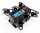
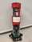
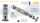

自动水下机器人+自动浮标




💡 单击图片查看完整图片
项目简介
AUV自主水下机器人，具备自主定深与智能视觉识别能力，可在复杂水下环境中完成稳定航行与目标识别任务；水下自动监测浮标，能够实现自主定深与数据实时回传，用于不同水深压力与温度数据的精准采集与可视化监测。两项研究成果共同参加中国机器人RoboCup大赛，荣获全国一等奖。
技术栈
- 操作系统：ROS机器人操作系统
- 视觉识别：Yolov11深度学习模型
- 传感器：MS5837深度传感器、IMU惯性测量单元
- 控制系统：PID闭环控制、步进电机控制
- 仿真环境：Gazebo物理仿真
- 通信系统：无线数据传输
AUV自主水下机器人开发
本人完成了机器人的"感知-决策-控制"全链路系统开发：
- 自动定深与自稳定：基于MS5837深度传感器与IMU的自动定深与自稳定控制算法，实现水下精确悬停
- 水下视觉识别：基于Yolov11的水下视觉识别系统，能够在复杂水下环境中准确识别目标
- 系统集成：通过ROS框架实现各模块高效通信，构建完整的自主控制系统
- 仿真验证：利用Gazebo仿真环境进行算法验证，提高开发效率
水下自动监测浮标系统开发
- 升降机构设计：设计了基于步进电机与丝杆结构的升降机构，实现精确的深度控制
- 深度闭环控制：构建了深度传感器闭环控制系统，实现了浮标的自主定深与稳定悬停
- 数据实时传输：实现浮标数据与岸上上位机的实时无线传输，支持远程监测
- 多深度监测：可在不同水深采集压力与温度数据，实现精准的环境监测
项目亮点
该项目实现了AUV机器人与监测浮标的协同工作，构建了完整的水下作业与监测系统。通过深度学习视觉识别技术与精确的深度控制算法，系统能够在复杂水下环境中稳定、可靠地完成各项任务。
技术难点与解决方案
水下环境的光照条件差、能见度低，对视觉识别提出了挑战。通过针对性的数据增强与模型训练，Yolov11模型在水下环境中仍能保持较高的识别准确率。同时，水下压力变化对深度控制的影响通过传感器融合与PID参数优化得到有效解决。
项目成果
通过两项技术的协同开发与优化，系统在比赛中展现出卓越的水下作业能力，最终以优异表现荣获全国一等奖，充分验证了水下机器人技术的先进性与可靠性。